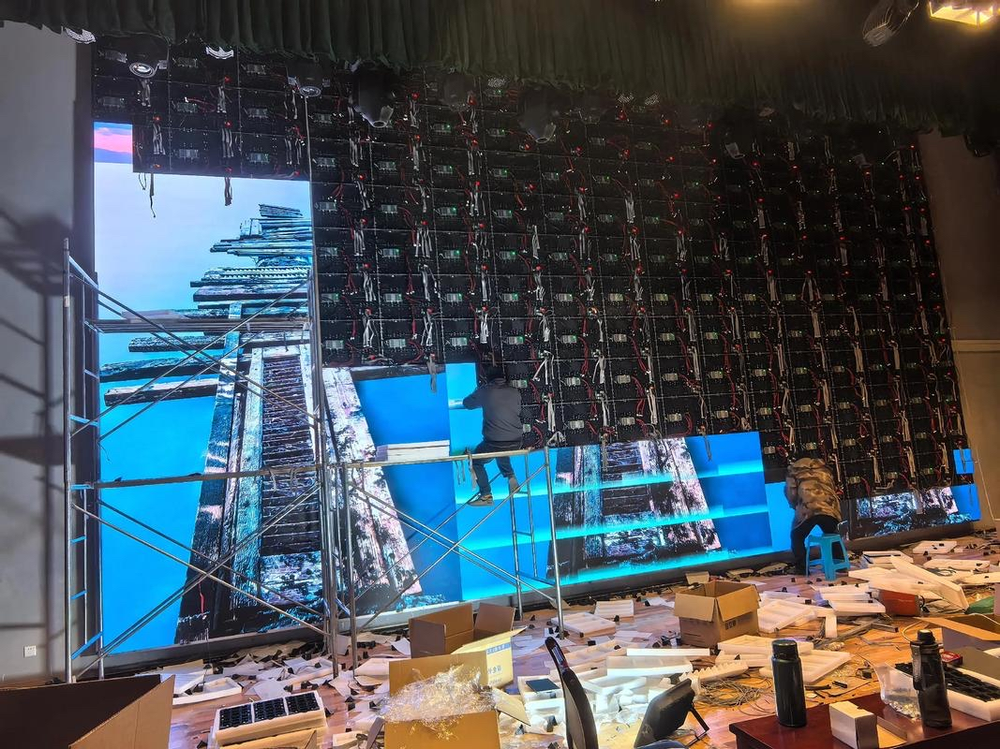

By David
For a warehouse or logistics centre, the right LED display is a coarse-to-mid pitch, high-brightness panel sized to the distance the aisle is actually read from — not a fine-pitch video wall. Match the pixel pitch to the worst realistic viewing distance, add automatic brightness control for skylights and open dock doors, choose the cabinet protection by zone, and settle who owns the data feed before the screen goes live. The rest of this guide works through those decisions in the order a buyer actually faces them.
A warehouse rarely installs one large screen; it installs several smaller ones, each doing a different job. The usual roles are stock and inventory boards, picking and put-away guidance at the aisle end, dock and yard scheduling, safety messaging, and digital signage above the picking floor. Each role has its own viewing distance, refresh rate, and audience.
The mistake is to treat them as one project. A dock schedule read from a truck cab needs different legibility from a productivity counter read by a supervisor walking the floor, and a safety alert has to interrupt both. Grouping the screens by role first, and by location second, keeps the specification honest and stops a fine-pitch panel being quoted where a coarse one would read better and cost less.
Inventory and stock-level boards are usually the most static of the set. They show bin locations, quantities, and replenishment flags, and they tolerate a slower refresh because the underlying stock only changes as goods move. Because the content is short numbers and labels rather than detail, these boards can run a coarser pitch and still read cleanly from the far end of a bay.
Picking guidance is the most demanding of the operational screens. It is read in motion, often by a picker pushing a trolley or driving a reach truck, so the content has to be large, contrasty, and stable rather than information-dense. The board answers one question — what to pick next, and from where — and anything that slows that read costs time on every line, every shift.
Dock and yard scheduling screens serve a different audience again: gatehouse staff, dock marshals, and drivers waiting in the yard. They show trailer arrivals, door assignments, and cut-off times, and they are frequently read from inside a vehicle through glass, across a large distance, and in daylight. That combination pushes the specification toward higher brightness and a coarser pitch than an indoor aisle board, and toward a weather-rated cabinet such as the D-PRO series where the screen faces an open door or the yard.
Safety and signage roles share the same hardware. Emergency messaging, zoned warnings, blocked-aisle alerts, and shift notices can override the operational view, and because the screen is already part of the working environment, people actually look at it. A laminated poster competes with everything else on the wall; a screen that already carries the pick list does not.
| Screen role | Typical location | Primary audience | Update rate |
|---|---|---|---|
| Inventory / stock board | Aisle end, replenishment zones | Pickers, replenishment | As stock moves |
| Picking / put-away guidance | Aisle end at high bay | Pickers, reach-truck drivers | Seconds |
| Dock and yard schedule | Dock doors, gatehouse | Marshals, drivers | Minutes |
| Safety and alerts | Floor-wide, all zones | Everyone on site | Instant override |
| Picking-floor signage | Above the picking area | Pick line, supervisors | Shift or campaign |
The viewing distance is set by the racking, not by the screen. A picking board at the end of an aisle is read from roughly the aisle width plus the approach run, often eight to thirty metres, and the audience is moving. That geometry, not a preference for sharpness, is what decides the pixel pitch.
When a picker reads a screen eight metres away while walking, a coarse pitch is not a compromise; it is the correct answer. Fine pitch buys resolution the viewer cannot resolve at that distance and then charges for it in cost, weight, and power. What matters is the closest realistic reading distance, not the closest possible one.
As a working guide, aisle-end boards read from a long high bay commonly sit in the P6 to P10 band, dock and gatehouse screens read from further away sit in a similar or coarser range, and a control-room wall watched from two or three metres moves to a fine pitch. These bands are industry-typical starting points and should be checked against your own measured distances rather than adopted as a rule. Our pixel pitch guide sets out the arithmetic behind them.
Angle matters as much as distance in a rack-filled building. A board mounted flat to an aisle wall is read almost head-on, but a board spanning a cross-aisle is seen at an angle from the far approach, and off-axis brightness falls away differently between panels. Ask for the horizontal and vertical viewing angle and check it against the worst reading position on the floor, not the best one.
Content size follows the same logic. The largest number on the screen should stay legible from the furthest realistic reading point, and everything else is secondary. A board designed to serve the near viewer and the far viewer at once usually fails the far one, which is exactly the position from which the picker most needs it. For close work such as a supervisor dashboard, a fine-pitch indoor range like the COB CV-PRO series suits bench-level reading, but it is the wrong tool at the end of a thirty-metre aisle.
| Zone | Mounting height | Reading distance | Common pitch band | Note |
|---|---|---|---|---|
| Dock doors | 3–5 m | 5–15 m | P4–P6 | Daylight and vehicle glass |
| High-bay aisle end | 6–10 m | 10–30 m | P6–P10 | Read in motion |
| Mezzanine pick tower | 4–8 m | 8–20 m | P4–P6 | Steep overhead angle |
| Control room wall | 2–3 m | 3–8 m | P1.9–P2.6 | Fine detail, close viewing |
| Yard / gatehouse | 5–8 m | 15–40 m | P6–P10 | Long range, all weather |
Read the table as a set of starting points, not a specification to copy. The pitch band that fits your building depends on your racking, your aisle widths, and how far a picker actually stands from the board, and a short site survey settles all three faster than any catalogue.
An indoor warehouse is not a dim room. Skylights, open dock doors, and high-bay fixtures all throw light onto the floor, so a screen that looks fine at night can look grey and washed out at midday. The answer is moderate-to-high brightness with automatic dimming, not a single fixed level set for the best or the worst case.
Brightness and glare pull in opposite directions. A panel bright enough to beat daylight through a roll-up door is also, at night, bright enough to dazzle a forklift driver who glances up at it. Automatic brightness control reads the ambient light and adjusts the output, which is what keeps the same hardware readable by day and comfortable by night.
The practical guidance is to specify a brightness band and a dimming system rather than one number, then verify the band against the site. A commonly quoted indoor band sits in the low thousands of nits, but the correct figure depends on your skylight coverage, the orientation of each screen, and whether a dock door faces direct sun. Treat any published range as a starting point to confirm, not a value to copy, and ask the supplier to state the assumption behind it.
Dust changes the calculation over time. A film of airborne dust dims the panel and scatters light, so a screen specified with no headroom can drop below the readable threshold within a season on a busy floor. Specifying some brightness headroom and a realistic cleaning interval matters more than the peak figure on a datasheet. Our brightness sensor guide covers how automatic dimming is set up and what to confirm with the supplier.
Dock-facing and yard-facing screens carry a much higher light load, and an indoor-brightness panel is often the wrong choice there. A higher-brightness, weather-rated cabinet such as the D-PRO series is built for the daylight and weather a door wall actually sees; even so, the exact rating belongs to your own site survey rather than to a brochure.
Every mounting decision in a warehouse is also a safety and access decision. The screen hangs above traffic that cannot stop quickly, so the mounting height must clear forklift masts and loads, the structure must survive impact and vibration, and a technician must later reach the panel without closing a working aisle for a day.
Clearance comes first. The bottom edge of any overhead screen should sit above the tallest load carried through the aisle, with margin for a raised mast, because a board that is struck once is a board that comes down. This is a survey question, not a catalogue question: the answer depends on the racking, the trucks, and the loads at your own site.
Structure follows clearance. Rack-mounted and truss-mounted screens live in a building that vibrates constantly from trucks and racking, so the bracket and the fixing must be specified for that duty, not bolted on as an afterthought. Ask for the load path and the fixing detail, and check that the wall or rack can carry the screen plus its impact and wind allowance. A supplier that builds its own frames and brackets can show the interface in the drawings, which is the part of the process the factory page illustrates.
Service access is the hidden cost that runs for the life of the screen. A panel reachable only by a scissor lift means every dead module books a lift, a technician, and a window in a busy aisle. A front-service cabinet lets a technician replace a module from a reach truck or a small lift without dismantling the mounting, which turns a half-day job into a short one and changes the maintenance budget for years.
Design the service route at purchase, not after the first fault. If the screen is high and the aisle is busy, front access, standard fasteners, and modules that swap without special tools are what keep the maintenance cost down and the downtime short. Bring a real repair scenario to the review: ask how a technician reaches the top row, and who removes the failed module.
Cabinet protection should be specified by zone, not by building. A dry picking floor, a cold room, and a washdown area impose completely different conditions, and protecting every screen to the standard of the harshest zone wastes money while protecting none of them properly for their actual environment.
Dust is the universal problem. Airborne dust settles into connectors and cooling paths and, over time, shortens component life, so sealed cabinets and conformal-coated driver boards are the baseline defence. Vibration from traffic and racking is the second universal factor, and reinforced cabinets with sealed connectors are the practical answer on an active floor.
Cold rooms and chilled docks add condensation. A screen that runs cold and then warms quickly can pull moisture onto its boards, so cabinets and drivers in these zones need more than a basic indoor rating. Washdown areas need cabinets that tolerate cleaning without letting water reach the electronics, which is a different requirement again and calls for a higher ingress rating.
The sensible approach is a short protection schedule: standard indoor cabinets in dry ambient zones, sealed and coated cabinets in dusty or condensation-prone zones, and a higher ingress rating wherever water is used. Writing that schedule into the tender keeps the budget focused where protection is genuinely needed. Our product series overview is the place to match a range to each zone.
| Zone | Main threat | Cabinet approach | Confirm with supplier |
|---|---|---|---|
| Dry picking floor | Dust, vibration | Standard indoor, sealed connectors | Cleaning interval and method |
| Dusty mezzanine | Airborne dust | Sealed cabinet, coated boards | Ingress rating and test |
| Cold room / chilled dock | Condensation | Coated boards, sealed cabinet | Thermal and warm-up design |
| Washdown / wet area | Water and cleaning | Higher ingress rating | Rating level and test method |
| Dock face / yard | Daylight, weather | Weather-rated outdoor cabinet | Brightness band and IP rating |
A screen only pays back if its content stays current, and the most common reason a warehouse screen goes stale is that nobody clearly owns the content. Before the display is installed, name the person who changes the layout, the person who approves the change, and the person who fixes a wrong number when one appears.
There are two broad models. In the first, content is templated: the screen shows fixed layouts fed by data fields, and the operations team only supplies or corrects the data, never the design. In the second, content is authored: someone builds and edits layouts, promotions, or messaging. Templated screens stay clean and consistent; authored screens stay flexible but decay unless someone is accountable for them.
Most warehouses are better served by the templated model for operational screens and by authored content only for signage and campaigns. That split keeps the pick list and the dock schedule visually stable, which is what makes them fast to read, while still allowing a safety campaign or a shift message to change when it needs to.
Change control matters because a wrong number on a screen is worse than no screen at all. A picker who has learned to trust the board and then finds it wrong will fall back to the handheld and the paper list, and the investment quietly stops working. Agreeing who can push a correction, and how quickly, is part of the specification rather than an afterthought.
Training and permissions complete the picture. If a shift supervisor cannot correct a stale field without calling IT, corrections are slow and the screen loses credibility with the people it is meant to serve. Decide who is authorised, what they can change, and what sits behind a controlled approval, then write it down and rehearse it once before go-live. If the model is unclear, the contact team can talk through how other facilities split ownership between operations and IT.
The display is the last step in a data pipeline that starts in the warehouse management system or ERP, and the integration is usually the part of the project that surprises buyers most. The screen vendor supplies hardware and control; your IT or integration team owns the data feed, the network, and the logic that decides what each screen shows.
That division of labour is worth stating in the tender. The common approach is a middleware layer that reads the relevant fields — pick face, quantity, priority, dock door — and pushes a rendered view to the screen on a refresh cycle measured in seconds. Some facilities run their own dashboard tool and stream it to the display, which keeps the data source inside the operator's own IT stack and makes the screen vendor-independent.
The questions to settle early are who maps each field, who maintains the mapping when the WMS is upgraded, and who is on call when a feed stops. A screen that occasionally shows an old number erodes trust faster than a blank one, so the owner of each field should be named before go-live, not discovered after the first wrong pick.
Local caching protects the floor when the network hiccups. If the link to the server drops, the screen should keep showing the last known list and flag it as stale rather than going blank or, worse, showing live-looking but frozen data. That behaviour should be specified and then tested under real shift conditions, including a deliberate disconnection.
A staged rollout is the safest route. Start with one aisle or one dock, confirm the feed behaves across a full shift and a shift change, then extend to the rest of the floor. Problems that would be disruptive across a whole site stay contained while the first screen is still a pilot, and standardising the later phases on one control platform, as the product series overview sets out, keeps the spares and skills common across the whole estate.
| Task | Typical owner | Confirm before go-live |
|---|---|---|
| Hardware, control system, content player | Display supplier | Included in scope and listed? |
| Network link to each screen position | Site IT / facilities | Who runs cable and drops |
| Field mapping from WMS / ERP | Site IT or integrator | Named owner per field |
| Dashboard template and layout | Ops team design, supplier support | Who edits and who approves |
| Refresh cycle per data type | Site IT and supplier | Seconds vs minutes agreed |
| Stale-data and failover behaviour | Display supplier and site IT | Tested under real shifts |
A warehouse screen runs far harder than an office display. A picking floor may run two or three shifts a day, so the panel is on for most of the year, and that duty cycle — not the purchase price — is what decides the maintenance plan. Buy for continuous duty, then plan spares and service windows around it.
Continuous operation shortens the life of poorly built electronics. Power supplies and cooling paths sized for an office are worked much harder on a three-shift floor, so generous thermal headroom and industrial-grade power design matter more here than an extra degree of brightness. A rated life in the tens of thousands of hours means little if the power supply fails in three. Platforms built for industrial duty, such as the ranges in the X series, are specified with that kind of operation in mind.
Spares should match the duty cycle. A screen that is hard to reach or runs continuously warrants a matched stock of modules, drivers, and power supplies held on site, so a fault becomes a swap rather than a freight wait. Replacement parts should also be calibratable to the original batch, because a technically compatible module can still read differently if its colour and brightness have drifted from the rest of the wall.
Service windows need planning around the operation, not against it. Many warehouses cannot blank an aisle during a peak shift, so service is scheduled into quiet periods or shift changes. Front access, quick-swap modules, and remote monitoring that flags a developing fault before it becomes visible all help fit maintenance into the windows the operation can actually offer.
Energy is a smaller but real line. LED panels draw far less than the lighting and handling equipment on the same floor, and automatic dimming trims the figure further when an area is quiet, so the running cost of the screen is rarely the deciding factor. A simple cleaning schedule, a stocked spares kit, and occasional connector and power-supply checks are what keep it out of trouble. Where a wall must stay bright and serviceable over a long duty cycle, a durable industrial range like the S series is worth comparing against a standard indoor panel.
A warehouse LED display is specified once and then lives for years, so it is worth taking the RFQ seriously rather than repeating a template. The list below is the information a supplier needs in order to quote accurately, and the questions that decide whether the quotation you receive is genuinely comparable to the next one.
Send distance, environment, and duty cycle with the enquiry. A supplier who knows the reading distance, the zone, the mounting height, and the hours of operation can recommend a pitch and a brightness with a reason behind them; one who only knows the screen size will quote whatever is convenient. Ask each supplier to state its assumptions so the quotes can be lined up side by side.
Ask the awkward questions too: what is included in the scope, who handles the integration, and what the spare-part situation looks like years out. Those answers, not the headline price, determine the real cost of owning the screen.
| Item to specify | Why it matters |
|---|---|
| Reading distance and zone per screen | Sets pitch and brightness band |
| Mounting height and service access | Decides bracket and maintenance cost |
| IP rating and zone protection | Dust, condensation, washdown |
| Duty cycle (hours per day) | Sizes power design and spares |
| Content ownership and update model | Keeps the screen current |
| WMS / ERP fields and refresh rates | Defines the integration scope |
| Control and player hardware scope | Avoids a missing component |
| Spare parts and lead time | Turns a fault into a fast repair |
| Integration and commissioning owner | Names who is on the hook at go-live |
Most warehouse display projects go wrong in the same three ways: a fine pitch is chosen for a distant viewer, brightness is set for the best case, and nobody is named to own the content or the data feed. Each of those mistakes is cheaper to avoid at the specification stage than to correct once the screen is up on the racking.
The screen that succeeds is the one the floor actually reads. Coarser pitch read clearly beats fine pitch read badly; moderate brightness that adapts beats a fixed figure that dazzles at night; a named content owner beats a beautiful model nobody maintains. When those choices are made deliberately, the display stops being a project cost and starts earning its place in the operation.
If the wall is large, the environment is harsh, or the integration is unfamiliar, bring the display supplier and the site IT team together early. Our team can help scope a warehouse installation from the distance and environment upward, and share control and load documentation for your integrator. Start the conversation at contact, review the ranges on the product series overview, or see how the cabinets are built on the factory page.
Where a US buyer holds stock rather than passing it straight to site, the storage conditions become part of the product’s performance rather than an administrative detail.
Three points apply. Moisture and temperature, because LED modules held in an uncontrolled space can suffer condensation, and the failure appears months later as a corrosion fault. Stacking and handling, since cabinets stored flat under load can distort, and the consequence is a visible seam on the finished wall. And batch recording, because a wall assembled from stock drawn at different times may carry modules from different batches, which is what makes a repair or an extension visible.
Two practical points for a project with phased delivery. Confirm the storage conditions before the first shipment rather than after, since the goods may wait there for months between phases. And record which batch went to which site, so a later service visit can match the replacement.

For this requirement our range covers it directly: the RH-PRO fine-pitch COB (flagship, full redundancy) and the COB CV-PRO series (Ultra-HD fine pitch).